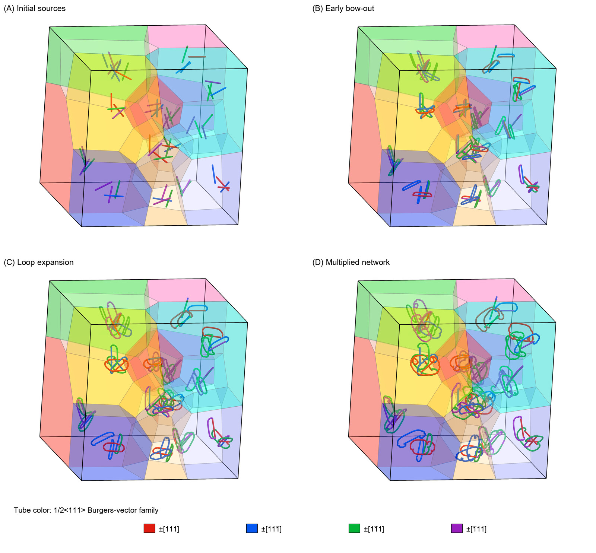
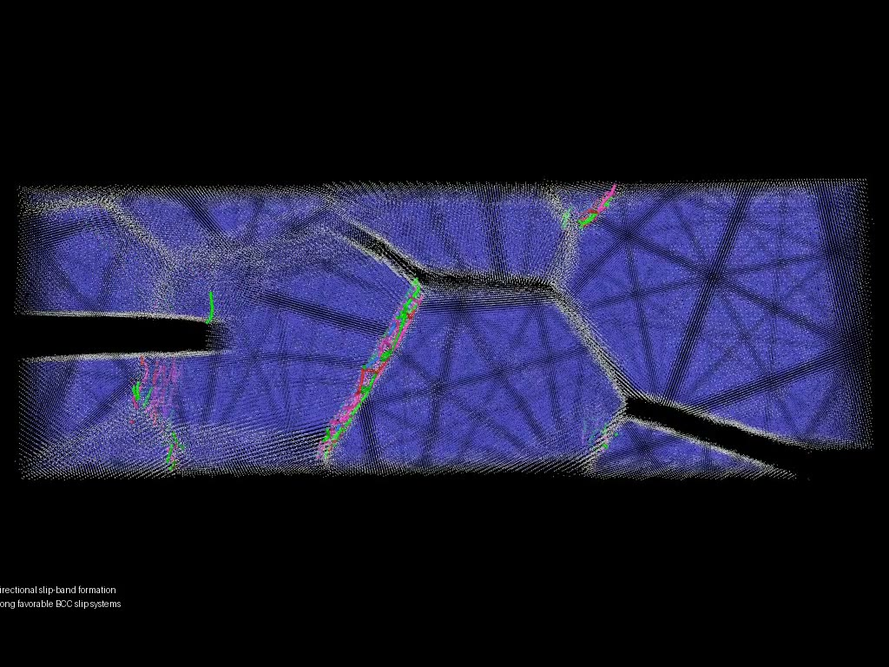

01 · Define
Polycrystalline geometry
Generate grain geometry, orientations, and neighbourhood information, then select the BCC slip systems for each grain.
Open research software · 2026
A modular workflow for grain-dependent BCC slip selection, Frank–Read source initialisation, dislocation-network evolution, and reproducible analysis.
Collective dislocation behaviour
Grain geometry and crystallographic orientation shape how dislocation networks develop in a polycrystal.
This workflow uses OpenDiS to simulate source bow-out, loop formation, and network evolution in body-centred cubic (BCC) tungsten. It provides reusable modules for grain-resolved source initialisation, crystallography, microstructure handling, analysis, and VTK export.
A documented example accompanies the code so that the calculation and its visualisations can be inspected and reproduced.
Workflow
01 · Define
Generate grain geometry, orientations, and neighbourhood information, then select the BCC slip systems for each grain.
02 · Evolve
Initialise grain-confined Frank–Read sources and evolve the nodal network under the specified loading and mobility model.
03 · Analyse
Track dislocation density, export VTK/VTP snapshots, and generate consistent visualisations of network evolution.
Model scope. DDD follows dislocation-network evolution in a crack-free tungsten polycrystal, while MD examines crack-tip fracture. The calculations provide complementary evidence at different scales and are analysed separately.
Visual evidence

